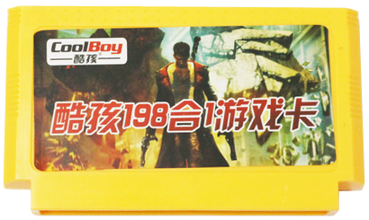

CoolBoy 198 in 1 list of games
CoolBoy 198 в 1 список игр
Buy / Купить
- Contra (12-in-1 Menu, US version)
- Super Contra (24-in-1 Menu, JP version of Super C)
- Contra Force
- Super Contra 6 (Contra Force hack)
- Super Contra 7 [Pirate Original]
- Super Contra 8 (Super Contra 7 hack) [Pirate Original]
- Kage (JP version of Shadow of the Ninja/Blue Shadow)
- Final Mission (JP version of S.C.A.T./Action in New York)
- Double Dragon (JP version)
- Double Dragon 2 (US version)
- Double Dragon 3 (US version)
- Target Renegade (title hack, says Double Dragon 4, US version)
- Chip to Dale no Daisakusen (JP version of Chip'n Dale Rescue Rangers)
- Chip to Dale no Daisakusen 2 (JP version of Chip'n Dale Rescue Rangers 2)
- Chip and Dale 3 (Heavy Barrel hack)
- Robocop (US version)
- Robocop 2 (US version)
- Tokkyuu Shirei Solbrain (JP version of Shatterhand, corrupted version)
- Robocop 3 (title hack, says Robocop 4)
- Tiny Toon Adventures (US version)
- Tiny Toon Adventures 2 (US version)
- Bugs Bunny Crazy Castle (title hack, says Tiny Toon 3 Crazy Castle)
- Shadow Warriors (EU version of Ninja Gaiden, corrupted version)
- Ninja Gaiden II: The Dark Sword of Chaos (US version)
- Ninja Gaiden III: The Ancient Ship of Doom (US version)
- Nekketsu Kakutō Densetsu
- Downtown Nekketsu Monogatari (JP version of River City Ransom)
- Nekketsu Kōkō Dodgeball Bu Soccer Hen (JP version of Nintendo World Cup)
- Downtown Nekketsu Kōshin Kyoku: Soreyuke Dai Undōkai
- Takahashi Meijin no Bouken Jima (JP version of Adventure Island)
- Adventure Island 2 (US version)
- Adventure Island 3 (US version)
- Takahashi Meijin no Bouken Jima IV
- Gekikame Ninja Den (JP version of TMNT, pirate version that has level select cheat)
- TMNT: Tournament Fighters (US version)
- Street Fighter 2010 (US version)
- Kick Master (US version)
- Mighty Final Fight (US version)
- Street Fighter 12 Peoples [Pirate Original]
- Mortal Kombat 4 [Pirate Original]
- Astyanax (US version)
- Mitsume ga Tooru
- Snow Bros. (US version)
- Spiderman: Return of the Sinister Six (Cut-down version)
- Batman (US Prototype)
- Kyuukyoku Tiger (JP version of Twin Cobra)
- Kyoryu Sentai Zyuuranger
- Silk Worm (US version)
- Bubble Bobble 2 (JP version, 1-player only, 20 lives)
- Darkwing Duck (US version)
- Kero Kero Keroppi no Daibouken
- Super Arabian
- Guevara (JP version of Guerilla War)
- Ningen Heiki – Dead Fox (JP version of Code Name: Viper)
- Power Blade (US version)
- Zippy Race
- Lunar Ball (JP version of Lunar Pool)
- Galaxian
- Mahjong
- Tengen Tetris
- Hon Shougi Naitou 9 Dan Shougi Hiden
- Tank 1990 (Battle City hack, Mode A only)
- F-1 Race
- Chinese Chess
- Soccer
- Lode Runner (US version)
- Circus Charlie
- Choujikuu Yousai: Macross (title screen removed)
- Super Mario Bros. (EU version)
- Excitebike
- Mach Rider
- Arkanoid
- Legend of Kage (US version)
- Dr. Mario
- Tennis
- Star Force (title screen replaced with the plain text)
- 1942 (glitchy text)
- Pinball
- Sky Destroyer
- Popeye
- Mighty Bomb Jack (JP version)
- Road Fighter (JP version)
- Muscle (US version)
- Galaga
- Aladdin 3 (Magic Carpet 1001 hack)
- Ice Climber (JP version)
- Bomberman (JP version)
- Mappy
- Harry Potter 1001 (Magic Carpet 1001 hack)
- TwinBee
- Spartan X (JP version of Kung Fu, glitchy life bar)
- Pika Chu
- Gradius
- Donkey Kong
- Donkey Kong Jr.
- Donkey Kong 3
- Donkey Kong Jr. Math (US version)
- Aquarium
- Arena
- Air Alert
- Awful Rushing
- Aimless
- Burbles
- Burrow Explorer
- Bug's War
- Bomb King
- Baseball New
- Bubble
- Cannonade
- Hitmouse
- Coast Guard
- Cub Adventure
- Depth Bomb
- Devildom Doom
- Diamond
- Dune War
- Firebase
- First Defender
- Five Days
- Frantic Mouse
- Fruit Dish
- Gallagant
- Garden War
- Gate
- Hallihod
- Hexapod New
- Hexapod War
- Labyrinth
- Lunarian
- Mad Xmas
- Motoboat
- Panzer Attack
- Pobble
- Polar Bat
- Ruralgoblin
- Robot
- Season Garden
- Shrew Mouse
- Snowball
- Star Fighter
- Strafe
- Small Dinosaur
- Silent Hunter
- The Archer
- Twin Cards
- Undersea Arena
- Warrior
- Abscondee
- Aether Cruiser
- Aim Cruise
- P.O.W. Prisoners of War (US version)
- Jungle Book (US version)
- Abarenbou Tengu (JP version of Zombie Nation)
- Zoom
- Tom & Jerry (US version)
- Air Wolf (JP version)
- Alien 3 (US version)
- Super Spy Hunter (US version)
- Superman (US version)
- Sword Master (US version)
- Taito Basketball (JP version)
- All-Pro Basketball (US version, glitchy title screen music)
- Summer Carnival '92 Recca
- Young Indiana Jones Chronicles
- Race America (US version)
- Spartan X2
- Banana Prince (EU version)
- Shatterhand (US version)
- Saint Seiya: Ougon Densetsu Kanketsu Hen
- Rockin' Kats (US version)
- Jyuuooki (JP version of Altered Beast)
- Kyatto Ninden Teyandee
- Gun Nac (US version)
- Ikari III: The Rescue (US version)
- Panic Restaurant (US version)
- Whomp'Em (US version)
- Wolverine (US version)
- Legend of Prince Valiant
- Top Gun Dual Fighers (JP version of Top Gun: Second Mission)
- Tale Spin (US version)
- Squashed (US Prototype of Ninja Jajamaru: Ginga Daisakusen)
- New Zealand Story (EU version of Kiwikraze)
- Mission Impossible (US version)
- Monster in my Pocket (US version)
- Gun Dec (JP version of Vice – Project Doom)
- Conquest of the Crystal Palace (US version)
- Mario 10 (Jackie Chan's Action Kung Fu hack)
- Mario 12 (Yoshi no Cookie hack)
- Mario 14 (Kaiketsu Yanchamaru 3 hack)
- Choujinrou Senki Warwolf (JP version of Werewolf: The Last Warrior)
- Nekketsu! Street Basket: Ganbare Dunk Heroes
- Ike Ike! Nekketsu Hockey-bu: Subete Koronde Dairanto
- Bikkuri Nekketsu Shinkiroku: Harukanaru Kin Medal
- Kunio Kun no Nekketsu Soccer League
- Nekketsu Koko Dodge Ball Bu
- Jackal (US version)
- Life Force (NTDEC pirate, US version)
- Rush'n Attack (US version)
← Back / Назад